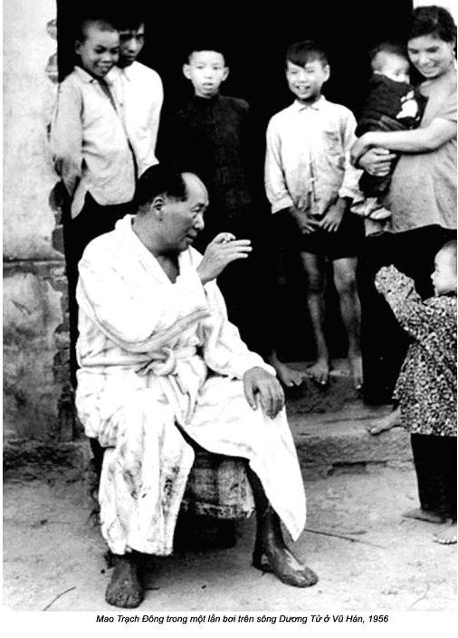

Chương 15

ấy giờ đã là tháng 6. Tiết trời ở Quảng Châu nóng kinh khủng. Mao dọn đến khu nhà số 3 và ở trong một phòng khách rộng. Hàng ngày những người phục vụ mang đến năm thùng đựng đầy nước đá để làm cho Chủ tịch mát mẻ, dễ chịu. Còn chúng tôi dùng quạt máy để xua tan khí nóng.
Tối đến muỗi nhiều vô cùng. Nếu ngủ không mắc màn, muỗi tấn công, nếu mắc màn bầu không hầm hập, ngột ngạt khó thở. Mao cũng không tránh khỏi những phiền phức. Ông ta đã khiền trách đám vệ sĩ đã không gắng hết mình diệt muỗi. Đám vệ sĩ đùn trách nhiệm cho tôi. Họ nói muỗi truyền bệnh sốt rét, nên việc chống muỗi là của bác sĩ.
Nạn muỗi là một vấn đề nan giải. Chúng tôi ở trên một hòn đảo có nước bao bọc xung quanh, đó chính là sào huyệt của muỗi. Ngoài ra, lại còn các xó xỉnh trong các ngôi nhà mà trần nhà chỉ cao khoảng ba, bốn mét, với những tấm rèm cửa dầy kín mít. Ban ngày bọn muỗi đậu trên trần nhà hoặc chui vào giữa các tấm rèm. Khi mặt trời lặn, chúng mới bay ra hàng đàn. Tất cả nhưng nỗ lực để giải toả sự hành hạ con người đều thất bại. Chỉ đến khi chúng tôi đề nghị phải có thuốc DDT mua từ Hong Kong, vấn nạn muỗi mới được giải quyết.
Tiết trời oi bức cũng làm cho những cộng sự của Mao nổi cáu. Họ đề nghị tôi thuyết phục Mao đã đến lúc nên trở về Bắc Kinh. Nhưng Mao nói: “Cái nóng không hành hạ tôi. Hơn nữa, tôi còn phải hoàn tất một vài công việc ở đây, nên chúng ta phải hoãn ngày về một chút”. Tôi đồ rằng có chuyện chính trị quan trọng Mao đang nung nấu suy nghĩ. Trong khi Mao đi vắng, nhiều bài xã luận đăng trên tờ Nhân dân Nhật Báo, ban lãnh đạo trung ương ở Bắc Kinh đã công khai chỉ trích “chính sách phiêu lưu” và tuyên bố, sản xuất công nông nghiệp phải được tăng trưởng từng bước vững chắc. Lúc đó, dư luận nhân dân Trung Quốc kể cả tôi cũng chưa hiểu sự chỉ trích “những chính sách phiêu lưu” của trung ương đảng nhằm vào Mao, vì ông chủ trương tập thể hoá và mở rộng sản xuất công nghiệp một cách ồ ạt.
Tôi định thuyết phục Mao trở về, La Thuỵ Khanh và Uông Đông Hưng hỏi tôi, liệu nước dòng Châu Giang có sạch không. Tôi đành bỏ ý định, vì Chủ tịch vừa nói muốn bơi ở ba con sông: Châu Giang ở Quảng Châu, sông Tương ở Trường Sa tỉnh Hồ Nam và sông Dương Tử ở Vũ Hán, tỉnh Hà Bắc. La Thuỵ Khanh và Uông Đông Hưng cũng như ban lãnh dạo của các tỉnh trên đều cho rằng, dự định của ông rất nguy hiểm. Đào Chú nói Châu Giang ở Quảng Châu bị nhiễm bẩn nặng. Vương Nhiệm Trọng nghĩ sông Dương Tử ở Vũ Hán quá rộng và dòng nước xoáy rất nguy hiểm. Nhưng Mao không nghe, bây giờ La và Uông chờ lời phán quyết chính thức của tôi là nước Châu Giang có bị nhiễm bẩn nặng không.
Có lẽ nước sông không sạch vì các nhà máy công nghiệp của tỉnh Quảng Châu đều làm ở phía thượng lưu của sông. Nhưng vì không xét nghiệm, nên tôi không thể nói được mức độ nhiễm bần như thế nào.
Uông và La đề nghị tôi kiểm tra vi khuẩn và chất thải trong nước, rồi nói lại kết quả cho họ biết, càng sớm càng tốt.
Sáng hôm sau, trước khi có kết quả xét nghiệm, một vệ sĩ của Mao đến đón tôi. Anh ta nói: “Chủ tịch có vẻ muốn đi bơi”. La Thuỵ Khanh và Uông Đông Hưng sẽ gặp Mao và muốn tôi đi cùng.
Tôi đi ngay, vào tư dinh của Mao, hai nhân viên an ninh đã có mặt ở đó. Mặt họ đỏ bừng và nhễ nhại mồ hôi. Uông lúng túng cười gượng với tôi. Kết quả xét nghiệm giờ đây chẳng cần thiết, Chủ tịch đang thay quần áo bơi.
Mao từ phòng ngủ bước ra. Ông khoác chiếc áo choàng màu trắng, mặc chiếc quần bơi cũng màu trắng và đi dép da. Ông đi nhanh đến thẳng cầu tàu, tay vung vẩy, bước lên du thuyền đã chờ sẵn. Đào Chú, Vương Nhiệm Trọng và Dương Thượng Côn đi sát ông, tôi rảo bước theo họ. Mao muốn chứng minh với mọi người rằng, không ai có thể ngăn cản được ông.
Thuở thiếu thời, ông đã tập bơi trong ao nhà và bơi rất khá. Tất cả nhng ai chịu trách nhiệm về an toàn của ông đều cố khuyên can ông đừng bơi. Nhưng đám vệ sĩ của ông càng ra ngăn cản, ông lại càng quyết tâm.
Chiếc du thuyền chạy ngược một đoạn ngắn trên sông, vừa tắt máy dừng lại, lập tức có bốn thuyền tam bản vây quanh. Mao bước xuống dưới theo chiếc thang bên mạn thuyền rồi nhẩy tòm xuống nước. Nhảy theo ông có khoảng 20 đến 30 vệ sĩ và các vị lãnh tụ của đảng. Tôi nhảy xuống nước cuối cùng và nhập vào vòng bảo vệ vây xung quanh. Mao quyết định nhảy xuống bơi quá nhanh, đến nỗi chỉ mình ông là người duy nhất mặc quần bơi, còn chúng tôi đều mặc quần lót.
Sông rộng trên 100 mét, lững lờ trôi. Nước sông bẩn đúng như tôi lo ngại. Thỉnh thoảng những đám rác rưởi lềnh bềnh trôi qua. Nhưng Mao chẳng nề hà. Ông nằm ngửa, để cái bụng phệ nổi lên trên mặt nước như quả bóng, hai chân duỗi thẳng như nằm trên ghế xa-lông. Nước đẩy ông trôi theo dòng và ít khi ông sử dụng chân hoặc tay để bơi.
Tôi bơi kém, nên phải dùng hết sức để giữ cho người nổi trên mặt nước. Mao đế ý thấy tôi bơi khá vất vả ông nói với sang: “Đồng chí chùng người lại, đừng cử động chân tay nhiều, mới giữ người nổi trên nước lâu mà không mệt. Hãy thử đi”.
Tôi thử, nhưng tiếc không có kết quả. Tôi lại phải khua chân khua tay, không thì bị chìm nghỉm. Mao bảo: “Đồng chí sợ chìm chứ gì? Đừng nghĩ vậy, càng sợ càng dễ bị chìm. Không sợ chìm người sẽ nổi”.
Dương Thượng Côn và Vương Nhiệm Trọng đã học nhanh hơn. Họ đã nắm được bài dạy tập bơi của Mao và cùng trôi nổi với ông. Vài năm sau tôi cố tập ở biển, sông và bể bơi mới biết bơi theo cách của ông.
Chúng tôi bơi gần hai giờ đồng hồ xuôi theo dòng Châu Giang, độ 6 hay 7 dặm. Sau đó chúng tôi tráng lại người và ăn trưa trên boong thuyền được trang bị đầy đủ tiện nghi. Giang Thanh từ trên buồng lái xem chúng tôi bơi, bước xuống nhập bọn.
Mao cảm thấy rất sảng khoái, hệt như ông vừa thắng trận. Mao hỏi xoáy La Thuỵ Khanh:
- Người của đồng chí bảo bác sĩ Lý nói nước sông quá bẩn phải không?
Tôi chống chế:
- Tôi thấy cả phân trôi qua mà.
Mao cười sảng khoái:
- Nếu lúc nào chúng ta cũng nghe lời thầy thuốc thì chúng ta chẳng thể tồn tại nữa. Tất cả sinh vật không cần không khí, nước và đất hay sao? Đồng chí nói cho tôi biết, cái gì là sạch sẽ? Tôi không tin có không khí sạch, nước sạch và đất sạch tuyệt đối. Mọi thứ đều không sạch mà đều bẩn. Đồng chí thử thả một con cá vào nước cất xem, đồng chí nghĩ con cá sẽ sống được bao lâu?
Tôi im lặng. Dẫu sao Mao cũng không chấp nhận ý kiến về vệ sinh của tôi.
Buổi tối, khi chúng tôi gặp lại nhau, tôi mới biết giữa ông và nhân viên bảo vệ của ông đã nổ ra một cuộc xung đột mới. Ông nói:
- Tôi muốn bơi ở cả ba con sông. Theo ý kiến của La Thuỵ Khanh và Uông Đông Hưng, tôi chẳng nên bơi ở con sông nào. Viện lý do Dương Tử là con sông có sóng to và nhiều xoáy nước nguy hiểm. Nếu không may tôi bị dòng nước cuốn đi thì không ai có thể cứu tôi được. Còn Đào Chú lại không muốn tôi bơi ở Châu Giang, nhưng đồng chí ấy không phản đối tôi bơi ở sông Tương. Vương Nhiệm Trọng không muốn tôi bơi ở sông Dương Tử, nhưng đồng chí ấy lại không phản đối tôi bơi ở Châu Giang và sông Tương.
Ở đây còn có vấn đề nhiệm vụ của mỗi người. La Thuỵ Khanh và Uông Đông Hưng phải chịu trách nhiệm đảm bảo an toàn cho Mao ở khắp nơi. Vì vậy họ không hề muốn Mao bơi ở bất cứ con sông nào. Là bí thư thứ nhất tỉnh Quảng Đông, Đào Chú lại phản đối việc Mao bơi ở Châu Giang và cho rằng tính mạng Mao sẽ gặp nguy hiểm. Nếu Mao bơi ở Dương Tử, thì Vương Nhiệm Trọng phải chú ý đến vấn đề an toàn cho ông.
Mao nói:
- Tôi không cần các đồng chí bảo vệ tôi. Song, các đồng chí vẫn chưa biết nước sông như thế nào, nên tôi đã cử Yến Thanh Ngọc và Tôn Vĩnh đến bơi thử ở sông Dương Tử và kể lại cảm tưởng của họ cho tôi biết.
Cả hai nhân viên an ninh này đều là những người bơi giỏi và luôn bơi cạnh Mao.
Điều không thể ngờ, Mao có thể bơi ở sông Dương Tử. Đây là con sông lớn, nước chảy xiết, hung dữ và nguy hiềm nhất Trung Quốc. Ngay việc điều khiển tàu bè trong dòng nước xiết có nhiều xoáy nước cũng là việc không dễ. Chưa có ai trong số cư dân hai bên bờ sông bơi được một quãng sông dài. Mặc dù vậy, Mao vẫn liều. Sau khi kiểm tra trở về, Yến Thanh Ngọc và Tôn Vĩnh đều đồng thanh báo cáo lại rằng, sông Dương Tử nguy hiểm hơn nhiều so với Châu Giang. Ai đã bị cuốn vào xoáy nước có thể mất mạng như chơi. Ngoài ra, trong nước còn có vô số sò ốc mang sán lá dễ gây bệnh.
La Thuỵ Khanh đề nghị Vương Nhiệm Trọng nên thông báo kết quả đó cho Mao, nhưng Vương lại cử ngay hai người bơi thử đến báo cáo vì Vương biết Mao không nghe ông.
La Thuỵ Khanh dặn đi dặn lại hai viên vệ sĩ phải nói thật cho Mao rõ. Họ đồng ý. Tất cả chúng tôi cùng đến chỗ Mao. Khi đứng trước mặt lãnh tụ, Yến Thanh Ngọc vì quá xúc động, nên lắp bắp nói không nên lời. Không có cách nào khác, Mao đành ngắt lời anh ta. Ông nói:
- Thôi được, đồng chí đừng nói nữa. Bây giờ tôi sẽ hỏi đồng chí và đồng chí hãy trả lời lần lượt từng câu một.
Yến vẫn chưa hết run. Mao bắt đầu hỏi:
- Sông rộng lắm không?
Yến gật đầu:
- Thưa, rất rộng ạ.
- Có nhiều xoáy nước phải không?
- Thưa, có nhiều xoáy nước ạ.
- Người ta có thể tự thoát ra được nếu rơi vào một xoáy nước không?
Yến lắc mạnh đầu:
- Thưa không, không thể ạ.
- Như vậy, không thể bơi được ở sông đó phải không?
- Thưa, đúng thế ạ.
Đột nhiên, Mao đấm xuống bàn và gầm lên giận dữ:
- Tôi cuộc rằng, bản thân đồng chí chưa hề xuống nước. Từ đâu đồng chí biết được những điều đó? Làm thế nào đồng chí lại có thể là chỉ huy cảnh vệ của tôi được?
Mao quát:
- Gun dan!
Đó là thành ngữ cổ, dịch theo đúng nghĩa “cút mẹ mày đi!” Một thứ ngôn ngữ chắc chắn nhân dân Trung Quốc không thể ngờ phát ra từ vị lãnh tụ tối cao.
Yến tái mặt, kinh hãi đứng như trời trồng.
- Gun dan! – Mao lại quát.
Yến rời khỏi căn phòng. Những người khác không hề nhúc nhích. Mao quay sang Tôn Vĩnh.
- Bây giờ đồng chí hãy nói cho tôi biết, sông Dương Tử như thế nào?
Tôn biết rõ điều anh sẽ phải trả lời. Anh nói không do dự:
- Dạ thưa, Chủ tịch có thể bơi ở sông Dương Tử được ạ.
Mao cười. Tôn muốn nói thêm, nhưng Mao đã biết trước:
- Đủ rồi. Đừng nói nữa. Đồng chí hãy chuẩn bị đi.
Uông Đông Hưng bực tức với Tôn Vinh. Ông vặn:
- Tại sao đồng chí lại nói dối? Đồng chí đã hứa nói thật với Chủ tịch cơ mà!
Tôn đỏ mặt:
- Thưa thứ trưởng Uông, đồng chí không thấy điều gì đã xảy ra với đồng chí Yến sao? Nếu tôi cũng nói với Chủ tịch như vậy, đồng chí ấy cũng lại tống cổ tôi ra ngoài. Tôi không thể làm khác được.
Yến cũng tức và trách đồng nghiệp đã phản bội anh.
Uông Đông Hưng cố gắng trấn an Yến và hứa sẽ bảo vệ anh ta trước cơn giận của Mao. Nhưng ông không làm được điều đó.
Sau khi chúng tôi trở về Bắc Kinh, Yến bị loại khỏi Nhóm Một. Còn Tôn Vĩnh, kẻ vừa nói dối vừa phản bội đồng nghiệp vẫn tiếp tục làm vệ sĩ cho Mao, thậm chí anh ta còn được đề nghị thăng cấp.
Rốt cuộc, cuối tháng 6-1956 Mao đã lên đường. Cái đích của chuyến du hành sắp tới là Trường Sa, thủ phủ tỉnh Hồ Nam, quê của ông. Tại đó, ông muốn bơi ở con sông Tương như thuở thiếu thời. Chúng tôi đáp trên con tàu đặc biệt của Mao.
Tiết trời ở Trường Sa nóng khủng khiếp, nhiệt độ tới 40 độ C. Ngay sau hôm chúng tôi tới nơi, Mao đã bơi lần thứ nhất.
Sông Tương đang mùa lũ, có nơi rộng tới gần 200 mét. Nhóm của Mao, cả thảy có khoảng 50 chục người, bơi gần đến dãy phố chạy song song hai bên bờ. Bỗng nhiên ở đâu đó có tiếng kêu thất thanh. Một vài người nói: “Đưa đồng chí ấy vào bệnh viện”. Lý Tương, trưởng phòng an công an Hồ Nam bị rắn cắn.
Mao vẫn bình thản như không cố chuyện gì xảy ra, nhưng vòng người khoảng từ 25 đến 30 nhân viên an ninh bơi quanh ông khép lại La Thuỵ Khanh hoảng hốt hỏi tôi: “Đồng chí có thuốc chống rắn cắn không?” Tôi gật, đã chuẩn bị đầy đủ. Tôi biết ông lo ngại cho Lý Tương, còn tôi không thể giúp đỡ quan chức bị thương. Tôi chỉ chịu trách nhiệm chăm lo sức khỏe của Mao.
La Thuỵ Khanh không hiểu sao lại có rắn và tại sao bên an ninh không kiểm tra kỹ khu vực này.
Nhưng Mao cũng thay đổi dự định vào phút chót, nhân viên an ninh đã chuẩn bị địa điểm khác để Chủ tịch bơi, nhưng họ cũng không có cơ hội thực hiện theo kế hoạch.
Sự việc xảy ra ngoài dự kiến đã dồn thêm gánh nặng cho các vệ sĩ của Mao. Uông Đông Hưng quyết định từ nay về sau, nhân viên an ninh phải kiểm tra thật kỹ thêm khoảng cách trên 500 mét cả hai chiều nơi mà Mao sẽ xuống tắm.
Mặc dù nước sông Tương chảy mạnh hơn Châu Giang, nhưng Mao vẫn để cho người trôi xuôi dòng như ở Quảng Châu. Ông trôi đến một hòn đảo nhỏ nằm giữa sông mà hồi còn trẻ ông thường đến. Đảo đó gọi là đảo Cam.
Ngay khi ông vừa đặt chân lên đảo, một chiếc ca-nô tuần tiễu cũng đã thả neo xong. Những người cần vụ mang đến cho Mao một chiếc choàng, một dôi dép và một hộp thuốc lá. Còn chúng tôi đi chân đất và chỉ mặc độc có chiếc quần bơi. Bỗng nhiên một lũ trẻ con trên đảo nhận ra Chủ tịch đã chạy ùa tới, hô vang khẩu hiệu: Mao Chủ tịch muôn năm! Nhân viên an ninh định xua chúng đi chỗ khác, nhưng Mao cho phép chúng ở lại, ông rất muốn gặp gỡ quần chúng.
Có một vài gia đình sống trên đảo. Những ngôi nhà của họ đã đổ sập tới một nửa. Những cây cam mà người ta lấy tên loài cây này đặt cho hòn đảo, chưa từng thấy ở bất cứ đâu. Mao châm một điếu thuốc, đi lại phía một bà già ăn mặc rách rưới.
Mao hỏi: “Bà sống ở đây ra sao?” Rõ ràng bà ta không hề biết trước mặt bà là vị Chủ tịch đảng cộng sản Trung Quốc. Bà vẫn lúi húi làm việc, không trả lời. Mao nhắc lại câu hỏi.
Cuối cùng bà cũng hững hờ đáp lại, không thèm ngước lên nhìn:
- Màn màn hẩu hẩu lớ!
Câu này có nghĩa “Vẫn vậy vậy thế thôi!”
Ngay lúc đó, một toán cư dân trên đảo tập trung xung quanh Mao và Mao kể thời còn trẻ ông thường bơi đến hòn đảo này. Khi đó hòn đảo vẫn còn hoang vắng.
Nhiều năm sau, vào tháng 6-1959 khi chúng tôi trở lại hòn đảo, bà già đã không còn sống ở đó nữa. Việc Mao ở lại trên đảo ngoài kế hoạch, nên lực lượng an ninh được một phen hú vía. Ngay sau đó, nhân viên phòng an ninh tỉnh và một đơn vị quân đội đóng ở gần đảo đã phải lùng tìm “những phần tử tình nghi” và đuổi tất cả dân trên đảo đi. Người ta đã biến hòn đảo thành một công viên lộng lẫy trồng cam. Vào mùa thu, hoa cam nở rộ, trông rất đẹp. Tôi hỏi Lý Tương, trưởng phòng an ninh tỉnh Hồ Nam, cái gì đã xảy ra với bà già, nhưng Lý nói không biết. Tất nhiên Lý biết, nhưng không muốn nói ra.
Vào ngày thứ ba chúng tôi lưu lại Hổ Nam, Mao lại đi bơi. Lần này tất cả chúng tôi đều bắt chước ông, thử để cho người nổi trôi theo dòng nước. Bỗng nhiên, Yến Thanh Ngọc, người đã khuyên Mao không nên bơi ở sông Dương Tử, không may sa vào hố phân. Bình thường hố phân nằm trên bờ sông, nhưng hố phân này lại ngập nước do nước đã dâng lên. Khắp người Yến toàn phân là phân. Trông anh ta thật đáng thương khiến tôi cũng phải bật cười theo những người khác.
Nhưng là bác sĩ riêng, phải quan tâm đến sức khỏe của Mao, nên buổi tối tôi đã nói đến việc này. Mao cười và cho rằng, thực phẩm mà chúng ta dùng đều nhờ phân bón. Ông nói tiếp:
- Sông Tương quá nhỏ. Tôi muốn bơi ở sông Dương Tử. Nào hãy đến sông Dương Tử!
Chúng tôi mất mấy tiếng đi tàu đến Vũ Hán.
Vương Nhiệm Trọng đã chuẩn bị tất cả mọi thứ. Chúng tôi ở nhà khách Đông Hồ. Vương tìm được một chiếc tàu thuỷ hiện đại, “Đệ nhất Đông phương hồng”, có khoảng từ hai đến ba trăm chỗ và trong khoang tàu có nhiều buồng ngủ nhỏ, một phòng tắm đầy đủ tiện nghi và có nhiều nhà vệ sinh. Mao, các vị lãnh đạo đảng cũng như ban tham mưu cồng kềnh của đám vệ sĩ lên tàu ở gần một nhà máy đã định sẵn và được lực lượng an ninh canh gác. Tám thuyền chở đầy nhân viên an ninh đi theo bảo vệ chiếc tàu thuỷ của Mao vă thêm bốn xuồng tuần tiễu nữa canh chừng ở khu vực xung quanh.
Khi chiếc tàu thuỷ của Mao xuôi ra giữa dòng đến chiếc một chiếc cầu lớn đang xây, Mao tụt thang xuống nước và các vị lãnh đạo khác làm theo ông. Lập tức, khoảng 40 nhân viên an ninh bơi thành một vòng quây quanh Chủ tịch. Tôi thử bắt chước bơi theo kiểu của Mao.
Tôi để cho người nổi, trôi theo nước và cử động tay chân càng ít càng tốt. Sông Dương Tử đang mùa lũ và từ giữa sông khó có thề nhìn thấy được bờ sông. Đây là con sông đẹp, đáng để thưởng ngoạn.
Bỗng tôi nghe thấy tiếng kêu từ con tầu Đông Phương Hồng và nhìn thấy những ca nô nhỏ lao nhanh hướng về phía chiếc tàu thuỷ. Mấy người thuỷ thủ nhảy xuống nước. Tôi bơi sát phía Mao, hỏi chuyện gì đã xảy ra nhưng chẳng ai biết.
Khi lên trên tàu mới hay, tướng ba sao Trần Tái Đạo, tư lệnh vùng Vũ Hán, đã xuống nước một mình sau chúng tôi không lâu. Dòng nước chảy rất xiết đã làm ông phát hoảng. Ông cố bơi trở lại tàu, nhưng dòng nước cuốn phăng, được một phen uống no nước. Các thuỷ thủ đã kịp vớt trước khi ông chìm nghỉm.
Chúng tôi đã để cho người trôi được khoảng hai giờ đồng hồ, La Thuỵ Khanh và Uông Đông Hưng yêu cầu tôi khuyên Mao nên thôi.
Nhưng Mao muốn bơi tiếp, ông hỏi tôi:
- Thấy chưa, bơi trên sông Dương Tử đâu có quá nguy hiểm có phải không?
- Dạ, lo là lo chuyện khác, thưa Chủ tịch.
Mao vẫn tiếp tục:
- Đối với tôi, tất cả những chuyện khó mấy, nguy hiểm mấy tôi cũng không ngại khi đã chuẩn bị kỹ và đầy đủ. Nếu không chuẩn bị tốt, dù việc thật dễ cũng trở lên khó.
Tôi rất tán thành ý kiến của Chủ tịch, nhưng tôi nghĩ không phải ông đề cập đến chuyện bơi lội mà là những chuyện khác.
Chúng tôi cứ bồng bềnh trôi theo dòng nước hơn một giờ nữa, La Thuỵ Khanh và Uông Đông Hưng lại nhắc tôi yêu cầu Mao lên tầu Đông Phương Hồng nghỉ vì đã tới đoạn sông có nhiều ốc sò có chứa sán lá gây bệnh.
Tôi nhắc Mao nên chú ý, nhưng ông bảo:
- Chuyện vặt. Đồng chí muốn tôi trở lại tàu chứ gì!
Tôi đáp:
- Chúng ta bơi hai giờ đồng hồ là đủ rồi. Trước khi bơi, nhiều người chưa ăn uống gì cả. Bây giờ chắc họ đói lắm.
- Thôi được. Ta trở lên tàu ăn cái gì đã.

Một thuỷ thủ cùng bơi với chúng tôi ước đoán chúng tôi đã bơi được chừng 15 dặm. Nhưng tôi chắc quãng đường còn xa hơn nữa. Nước sông chảy xiết, nên chúng tôi không tốn sức lắm. Dương Thượng Côn cũng đồng ý, bảo: “Đây không phải là bơi, mà thả người trôi theo dòng nước”.
Đến khi Mao trở lên tàu, những người chịu trách nhiệm an toàn cho ông mới thở phào nhẹ nhõm. Uông Đông Hưng rất lo, vì nếu Mao rơi vào trường hợp Trần Tái Đạo, chắc ông cũng chìm. Uông bảo:
- Chủ tịch có mệnh hệ gì chắc tôi không thoát khỏi tội thiếu trách nhiệm.
Tôn Vĩnh người đã dám nói Mao nên bơi ở sông Dương Tử cũng như trút được gánh nặng. Vì anh ta biết, đời anh ta sẽ chấm hết, nếu Mao có mệnh hệ gì. Mao mời chúng tôi dùng bữa trưa. Ông rất hoan hỉ về kết quả ông đã đạt được. Và những kẻ xu nịnh đã không bỏ lỡ thời cơ. Vương Nhiệm Trọng rót một ly rượu vang mời Mao. Ông nói:
- Thưa Chủ tịch, xin Chủ tịch dùng một ly rượu để tránh bị cảm lạnh ạ.
Mao cười lớn:
- Ai lại cảm lạnh giữa trời nóng nực như thế này? Nhưng đồng chí hãy cho chúng tôi uống cái gì đi đã. Tất cả cụng ly với tôi nào!
Ông nhấp ly rượu và nói với tướng Trần khi đó vẫn chưa hoàn hồn:
- Đồng chí Trần Tái Đạo này, tôi nghĩ đồng chí nên uống thêm chút vang nữa. Bình thường mọi người đều bơi được cả, tại sao đồng chí lại không?
Trần chẳng biết nói thế nào, đành im lặng.
Vương bắt đầu nịnh rất lộ liễu:
- Thưa Chủ tịch, chúng tôi biết Chủ tịch từ nhiều năm nay, nhưng đến giờ, mới biết Chủ tịch là một người bơi rất giỏi và có nghị lực rất cao. Khi còn trẻ, Chủ tịch đã từng nói: “Chiến đấu chống lại trời, chống lại đất, chống lại con người – hạnh phúc là vô tận”. Điều này đã được thể hiện trong hành động. Hôm nay chúng tôi được bơi cùng Chủ tịch, đó là hạnh phúc vô tận cho chúng tôi. Chúng tôi đã học hỏi được rất nhiều ở Chủ tịch. Tôi hy vọng rằng, trong tương lai Chủ tịch sẽ còn dìu dắt, chỉ bảo và giáo dục chúng tôi nhiều hơn nữa.
La Thuỵ Khanh, người đã cứng đầu cứng cổ ngăn cản ý định của Mao bơi ở cả ba con sông, cũng hùa theo ca ngợi:
- Từ lâu chúng tôi là những môn đồ của Chủ tịch, nhưng vẫn chưa thấu hiểu được tất cả những gì đã học được ở Chủ tịch. Tôi không phải là người lỳ lợm, cứng đầu như Chủ tịch thường nhắc nhở. Tôi có thể sửa đổi được mình.
Dương Thượng Côn không tỏ ra chống lại các dự định của Mao, thường giữ im lặng. Dương gọi cuộc bơi của chúng tôi là “thả nổi người theo dòng nước”, tôi biết, ông cũng không ấn tượng gì thành tích mà Mao đã đạt được. Mặc dù vậy, cũng bắt đầu hoà giọng ông vừa cười vừa nói:
- Không ai có sức mạnh bằng Chủ tịch. Không có vị lãnh tụ nào trên trái đất này cồ thể coi thường núi cao, sông dữ như Chủ tịch. Không có một nhân vật lịch sử nào có thể sánh được với Người.
Ngay cả Uông Đông Hưng, dù đã cố gắng làm tất cả mọi việc để can Mao đừng bơi, cũng quên hết mọi sự. Uông nói:
- Thưa Chủ tịch, chúng tôi cần rút ra bài học kinh nghiệm này. Chúng tôi không nên chỉ nhìn vào vấn đề an ninh mà cần phải noi gương Chủ tịch, làm theo những hành động vì đất nước của Chủ tịch. Nhân dân ta phải noi theo gương Chủ tịch…
Mao chìm đắm trong những lời ca tụng.
- Thôi đừng nịnh tôi nữa. Không có việc gì là không thể làm được, nếu người ta thực sự muốn làm việc dó. Các đồng chí nghĩ xem, nếu các đồng chí gặp điều gì đó bất thường nhưng không chế ngự được ngay và nếu các đồng chí buộc phải làm điều gì đó thì đừng có do dự, mà phải nghiêm túc chuẩn bị mà làm – như Vương Nhiệm Trọng vậy. Đồng chí ấy lúc đầu cũng can ngăn tôi, nhưng nhanh chóng hiểu ra và đã chuẩn bị kỹ trước khi bơi và đã làm được. Đó mới là quan điểm đúng.
Giang Thanh lại ca tụng Mao khi mọi người đã tạm ngưng. Bà đã từng là người phản đối Mao bơi ở sông Dương Tử, nhưng thái độ kiên quyết của Mao đã làm cho bà đổi ý. Với giọng khinh khỉnh, bà hỏi:
- Đi bơi có gì nguy hiểm đâu nhỉ?
Rồi bà hợm hĩnh nhìn mọi người xung quanh:
- Khi ở Quảng Châu, các đồng chí đã phản đối việc Chủ tịch bơi. Các đồng chí đã hoảng hốt ra mặt. Nhưng tôi lại nghĩ khác.
Mao thường quả quyết: “Chỉ có Giang Thanh là luôn luôn ủng hộ tôi”. Ông có lý. Giang Thanh đã ủng hộ tất cả các việc làm của Mao vì bà không có sự lựa chọn nào khác.
Tất cả mọi người ở đây đều là những người lãnh đạo cao cấp của đảng cộng sản, và tôi đã liên tưởng tới những lời Mao thường nói về đồng chí của ông: “Họ thường ghen tị nhau về những ân huệ tôi ban cho”. Mao nói tiếp: “Họ là những người tốt mà tôi có thể lợi dụng”. Nhưng họ đều là cán bộ lãnh đạo của Đảng nhưng cũng là những kẻ thích nịnh bợ. Vậy làm sao Mao có thể lợi dụng sự nịnh bợ này?
Cuộc nói chuyện trong bữa ăn và những lời tán tụng của mọi người thật là nhàm chán và vô nghĩa. Câu chuyện chỉ xoay quanh việc Mao bơi 3 con sông. Nhưng những lời bốc thơm Mao cũng có tác dụng về chính trị. Kế hoạch cải tổ Trung Quốc của Mao thật đồ sộ, nguy hiểm và đầy mạo hiểm. Ông có tham vọng mau chóng đẩy Trung Quốc trở thành một nhà nước xã hội chủ nghĩa. Ông phản đối sự dè đặt của ban lãnh đạo trung ương đảng, phê phán tất cả những ai cưỡng lại những dị biệt mà thiếu cân nhắc, kể cả những nhân vật bảo thủ ở Bắc Kinh. Theo quan điểm của Mao, những vấn đề xuất hiện trong quá trình tập thể hoá nông nghiệp và trong công cuộc xây dựng xã hội chủ nghĩa là do thiếu chuẩn bị đầy đủ, chứ không phải do chính sách, đường lối. Nếu bản thân Mao đã có thể bơi ở những con sông nguy hiểm mà không mệnh hệ gì, thì đất nước Trung Quốc cũng có thể dám cải tổ toàn bộ nền kinh tế và cơ cấu xã hội để tiến tới thời kỳ hoàng kim và được thế giới vì nể. Nếu các nhà lãnh đạo cao cấp Trung Quốc không ủng hộ kế hoạch của ông, thì ít ra cũng có giới lãnh đạo ở các tỉnh như Đào Chú và Vương Nhiệm Trọng đứng về phía ông. Mao chỉ có thể thực hiện được kế hoạch của ông nếu các quan chức cao cấp của các tỉnh và địa phương hợp tác. Do đó, ông thường đi vi hành các nơi. Chính ở các tỉnh, ông đã tìm kiếm sự ủng hộ mà ở Bắc Kinh ông không có và chuyến đi điền đã vào mùa hè năm 1956 của ông đã thu được kết quả to lớn.
Mao lãnh đạo Trung Quốc tương tự như ông đi bơi. Ông theo đuổi những chính sách mà chẳng ai hiểu nổi và thực hiện những ý tưởng chính trị kỳ quặc như “Đại nhảy vọt”, Công xã nhân dân và Cách mạng văn hoá. Vào tháng 6-1956, những dự định chính trị mạo hiểm nhất như “Đại nhảy vọt” và Cách mạng văn hoá vẫn chưa được nói đến. Và mười công trình lớn dưới thời cai trị của ông được dự định dựng lên nhân kỷ niệm thập niên “giải phóng” đầu tiên do đảng cộng sản tiến hành, trong đó có Đại lễ đường Nhân dân và Viện bảo tàng cách mạng, phải được phác thảo trên bản vẽ từ bấy giờ. Sau lần bơi đầu tiên ở sông Dương Tử, tỉnh Vũ Hán, dần dần tôi hình dung thấy Mao có những suy nghĩ rất đặc biệt.
Ở Vũ Hán, tôi đã đi cùng Mao đến gặp Lâm Nghị Sơn – trưởng phòng kế hoạch của khu vực thung lũng sông Dương Tử. Lúc đó tôi mới biết Mao có dự định cho xây một đập nước khổng lồ chắn ngang sông Dương Tử. Khi được nghe ông Lâm trình bày, xem kế hoạch xây đập, điều làm cho tôi thật sự lo ngại là Lâm Nghị Sơn chỉ là một nhà cách mạng lão thành, chứ không phải là một nhà khoa học hay một kỹ sư, trong khi đề án lại đề cập đến một công trình kỹ thuật là thay đổi toàn bộ khu vực thung lũng sông Dương Tử. Muốn làm được điều này, cần những kiến thức khoa học chuyên sâu, nhưng kết quả như thế nào khó mà mường tượng được. Tuy thế, Mao rất phấn chấn. Ông nói với tôi:
- Trong tương lai, ba thung lũng sẽ biến mất và ở đó sẽ là một hồ chứa nước mênh mông.
Ông muốn nói tới đoạn sông Dương Tử nổi tiếng nhất với những tảng đá dựng đứng, nước chảy rất xiết, tạo nên một quang cảnh đầy thu hút vốn đã được ngợi ca trong những bức tranh, trong những bài thơ từ hàng thế kỷ nay. Buổi tối sau khi chúng tôi đến gặp Lâm, Mao đã sáng tác một bài từ để ca ngợi cuộc đi bơi, ca ngợi những con sông và sự can đảm của những người đã quyết định thay đổi cả thế giới.
Mấy khi uống nước Trường xa
Mấy khi chén cá la đà Ô Giang
Mấy khi bơi dọc sông Dương
Ngắm nhìn đất Thục mờ sương đôi bờ
Sóng to, gió rít, sương mờ
Kinh ngư vẫn vượt mới là kình ngư
Giữa trời lồng lộng bao la,
Vẳng nghe tiếng vọng người xưa phán truyền:
“Quá khứ, vị lai tại hà tất biến”.
Gió nổi, buồm căng
Rắn rết sợ nằm im
Anh tài vững tay lái
Xây dựng cho tương lai
Quê hương và đất nước
Sự thật hơn mơ ước
Cầu nối giữa đất trời
Vắt ngang lưng chừng trời
Khai thông đường Bắc-Nam
Xẻ núi, ngăn mây Vũ Hán
Nước hồ kia sẽ lặng như tờ
Hồn ma quỷ dữ vật vờ trốn mau.
Thế giới đã đổi thay.
Trung Hoa đổi thay!
Không có một thế lực nào ngăn cản được Mao, kể cả sóng to bão lớn của Ban chấp hành trung ương ở Bắc Kinh phản đối. Giống như Tần Thuỷ Hoàng, người sáng lập đế chế Trung Hoa, xây dựng Vạn Lý Trường Thành, Mao cũng muốn xây những công trình vĩ đại lưu lại trăm năm cho hậu thế. Đập thuỷ điện xây trên con sông lớn nhất, quan trọng nhất chỉ là một trong những đề án ông đưa ra.
Sau này, các nhà khoa học và các kỹ sư cũng đã được đưa đến làm thuỷ điện trên sông Dương Tử. Họ biết ước mơ của Mao xây dựng đập thuỷ điện mới điều họ thực hiện. Các nhà khoa học tin ước mơ của Mao sẽ thực hiện được. Mặc dù sau này các nhà khoa học và các kỹ sư chân thật đã bày tỏ sự nghi ngờ trước Hội đồng nhà nước và trong Hội nghị tư vấn chính trị những trăn trở của họ, mãi hơn 15 năm sau khi Mao chết, công trình này mới được chuẩn y vào tháng 4-1992.
Cả hai ngày sau, Mao cũng bơi ở sông Dương Tử và cứ mỗi lần bơi xong, ông đều tỏ ra khoái trá. Sau lần bơi thứ ba, bỗng nhiên ông nói, tất cả trở về Bắc Kinh ngay gấp. Bây giờ đã tháng 7. Vì dồn tất cả tinh thần vào việc chăm lo sức khỏe cho Chủ tịch và sự tranh cãi giữa những người cộng sự gần gũi của ông, nên tôi không hề biết đến những cuộc tranh chấp chính trị mà chính Mao đã dàn xếp được khi ông vắng mặt ở Bắc Kinh. Nếu tôi muốn sống, bằng mọi giá tôi không được để lộ quan điểm chính trị của mình. Chỉ qua Mao, tôi mới biết được những thay đổi lớn lao của đất nước, từ những tài liệu trong nội bộ đảng, tôi đã nhận được tận tay và từ những báo cáo mà người bạn của tôi, Điền Gia Anh, thư ký riêng về chính trị của Mao, đã cho tôi hay. Sau khi chúng tôi trở về Bắc Kinh, việc tôi giữ khoảng cách với lĩnh vực chính trị không còn đơn giản nữa.